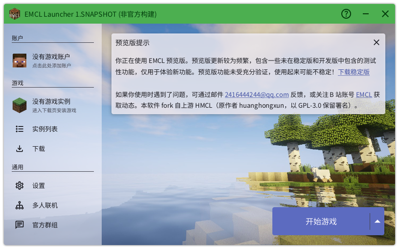
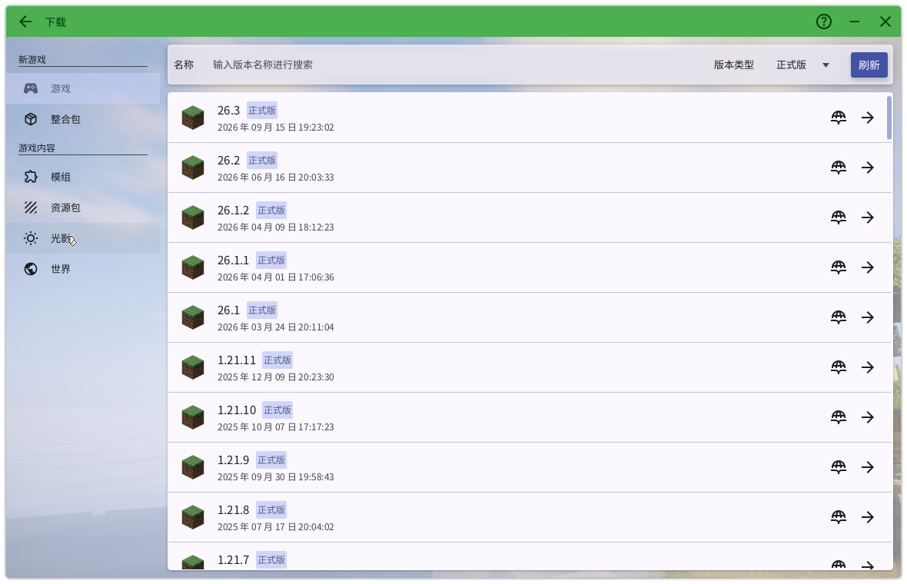
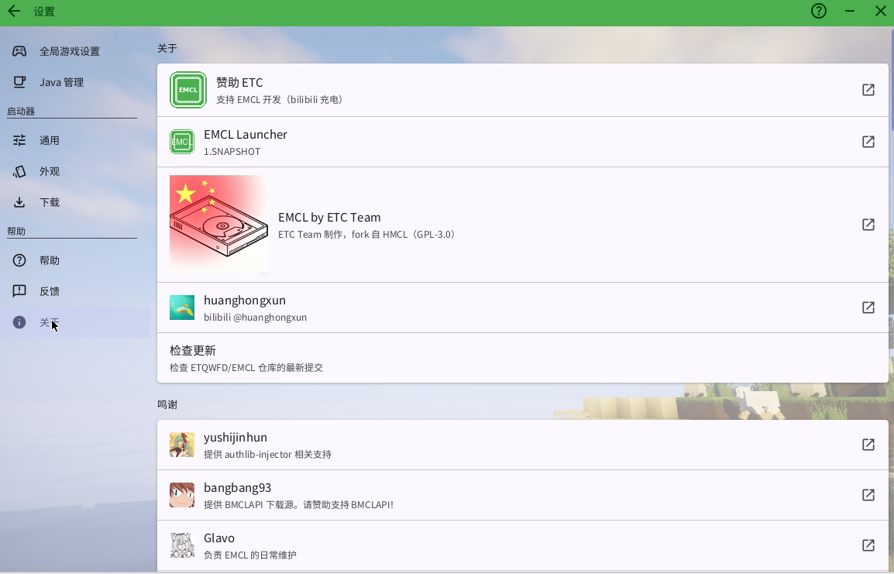

保留 HMCL 的完整能力，换成 EMCL 的绿色。
Mojang 官方源与 BMCLAPI 镜像自动切换，多线程、断点续传、失败源自动禁用。
完整 OAuth 登录流程，离线与正版入口并存，客户端 ID 支持环境变量注入。
启动前静态检查作弊客户端、作弊 Mod 与 JVM 注入参数，命中即拦截并记录。
默认绿色主题与 EMCL 图标，界面顶栏显示 EMCL。
启动时比对 GitHub 最新提交，三态更新：立即更新、忽略此版本、以后再说。
Windows 版为单个 EMCL.exe，内置精简 JRE 与 JavaFX，双击即用，无需安装 Java。
真实 EMCL 运行截图。



发布在 GitHub Releases 的 continuous 标签，持续更新。
未成年人充值、服务器封禁、道具纠纷、支付退款、服务器管理规则等事务，请联系对应服主 / 服务器管理组 / 支付渠道 / Microsoft·Mojang 官方支持，均不属于启动器可处理范围。
本项目按 GPL-3.0 开源，按「现状」提供。EMCL 是 fork 自 HMCL（原作者 huanghongxun）的开源分支，保留上游署名，版权归 ETC Team。作者与开发者不对使用后果承担法律责任。
当所有启动器失效时，我将作为备选——游戏不该停止运营，游戏是人类精神上的支撑柱。